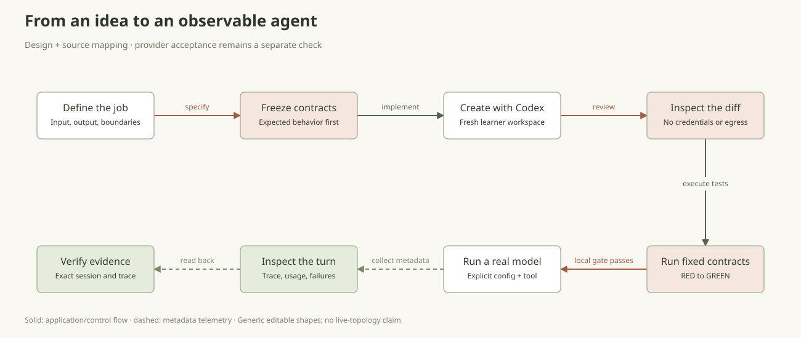
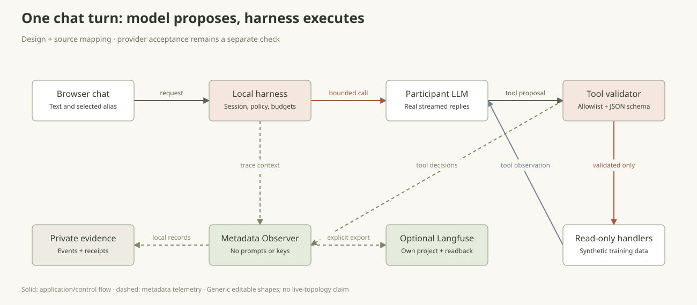
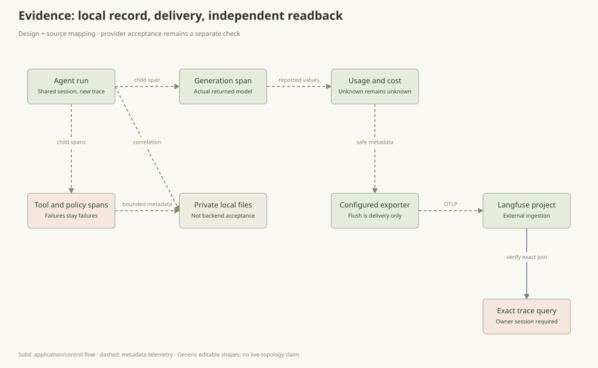
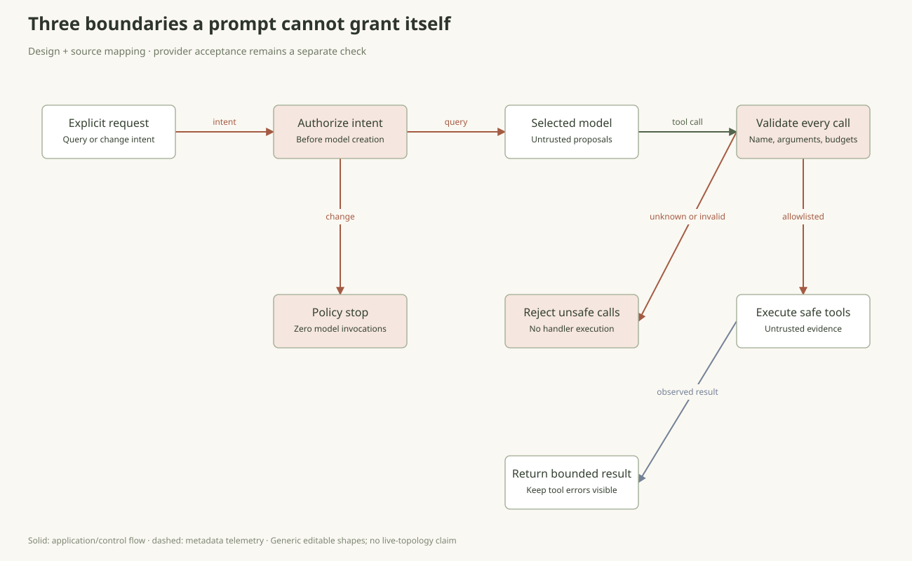

The agent is on call. Can you trust it?
Build a real agent in 60 minutes. Investigate one synthetic incident, challenge its permissions and follow the evidence.
Payments is slow. A release just changed. What should the agent do?
Payments p95 is 840 ms; checkout is 65 ms in a training fixture. A nearby release is a clue, not a verdict. Build the investigator, challenge its evidence and stop it at the change boundary.
Open the incident brief ↗The alert arrives
The runtime agent gets a small interface, even when the coding agent can edit a whole app.
Would you let this model restart payments?
Discussion choice only. This does not run code or validate an agent.
Reveal the principle, then inspect the actual result
The coding assistant edits source. The runtime model receives only registered tools. A polite system prompt is not a permission boundary.
- Use one incident: payments is slow. Define evidence, output and forbidden actions.
- Explain the coding harness versus the runtime harness.
- Create an empty learner workspace and show its expected missing-agent RED.

export LAB="local/private/agent-studio-$(date +%Y%m%d-%H%M%S)"
.venv/bin/python scripts/create_studio_harness.py --output "$LAB/learner"
"$LAB/learner/init.sh"Check before continuing
Expected RED: agent.py does not exist. Fourteen fixed contracts define the behavior; do not weaken them.
If this live step is blocked
If the runtime model is unavailable, create the workspace and inspect the fixed contracts. Do not replay a canned answer.
Build your investigator
Model and Observer are injected. Native calls and the loop remain inspectable.
What is the smallest thing that makes this an agent?
Discussion choice only. This does not run code or validate an agent.
Reveal the principle, then inspect the actual result
Inspect the generated loop: model proposal → schema validation → handler → observation → next model step. Tests are evidence about code, not a real provider.
- Read the workspace task and contracts, not the instructor reference.
- Use the bounded coding prompt; review imports, tool registry and diff.
- Run unchanged contracts. Keep the real coding output privately.
codex exec --ignore-user-config --sandbox workspace-write \
-c sandbox_workspace_write.network_access=false \
--skip-git-repo-check --ephemeral -C "$LAB/learner" --json \
- < "$LAB/learner/prompts/01-core.md" \
> "$LAB/codex-core.jsonl" 2> "$LAB/codex-core.stderr"
"$LAB/learner/init.sh"Check before continuing
Fourteen contracts GREEN plus source review. This alone proves no real model, deployment or backend ingestion.
If this live step is blocked
Keep any failed coding transcript. Open the separately labelled reference only if live coding cannot finish.
Ask for evidence
The learner flag selects the newly built core; the web shell supplies sessions and transport.
Is a fluent answer proof the tool ran?
Discussion choice only. This does not run code or validate an agent.
Reveal the principle, then inspect the actual result
Require service_health in the real turn. In the initial learner, only that tool exists. A model answer without it fails the grounding exercise.
- Use private server-owned model configuration. The coding account and runtime model key are separate.
- Start the loopback chat with --learner-agent pointing to the reviewed file.
- Ask for payments health. Inspect the actual native call and explicitly synthetic evidence.

PYTHONPATH=src .venv/bin/python -m agent_workshop.studio \
--config local/private/studio/studio.toml \
--learner-agent "$LAB/learner/agent.py" \
--output "$LAB/chat-evidence" --port 8770Check before continuing
Real model response and service_health execution. Only the initial tool is available until the core is extended.
If this live step is blocked
Use the zero-model policy control and inspect source/contracts if live inference is unavailable. Mark inference unverified.
The release is a clue
A prompt can request a capability; it cannot register one.
Does a recent release prove the cause?
Discussion choice only. This does not run code or validate an agent.
Reveal the principle, then inspect the actual result
Add release_diff to the learner or explicitly use the instructor app. The fixture has a timeout change, but causality remains unconfirmed. No rollback capability exists.
- Let the audience request one extra source: release_diff(service). Add its strict schema and preserve the fixed contracts.
- Review and restart that exact learner file; run the incident CLI from a second terminal with your configured alias.
- If time allows, add search_runbook with prompts/02-tools.md. Otherwise use the explicitly labelled instructor lane for later injection/failure cases.
codex exec --ignore-user-config --sandbox workspace-write \
-c sandbox_workspace_write.network_access=false \
--skip-git-repo-check --ephemeral -C "$LAB/learner" --json \
- < "$LAB/learner/prompts/04-release.md" \
> "$LAB/codex-04-release.jsonl" 2> "$LAB/codex-04-release.stderr"
"$LAB/learner/init.sh"# After code review: stop your owned chat process with Ctrl-C, then restart.
PYTHONPATH=src .venv/bin/python -m agent_workshop.studio \
--config local/private/studio/studio.toml \
--learner-agent "$LAB/learner/agent.py" \
--output "$LAB/chat-release-evidence" --port 8770.venv/bin/python scripts/studio_demo.py --scenario incident --model local \
--output "local/private/incident-$(date +%Y%m%d-%H%M%S)"Check before continuing
Original contracts remain GREEN. New negative tests and the actual tool call show the additional boundary.
If this live step is blocked
Inspect the tool input/schema/output locally as synthetic evidence. Do not call that an LLM-selected tool execution.
Follow one turn
Session, run and trace answer different questions. Delivery and readback are different evidence.
The exporter flushed. Is the trace verified?
Discussion choice only. This does not run code or validate an agent.
Reveal the principle, then inspect the actual result
Follow session → run → trace → generation/tool spans. A private file, exporter result and backend readback are distinct receipts. Missing tokens and price remain unknown.
- Add generation, tool and authorization spans through the injected Observer.
- Inspect reported usage; preserve unknown counts and configured-rate estimates.
- Opt into your own Langfuse project and query this exact trace/session. Keep failed export visible.

codex exec --ignore-user-config --sandbox workspace-write \
-c sandbox_workspace_write.network_access=false \
--skip-git-repo-check --ephemeral -C "$LAB/learner" --json \
- < "$LAB/learner/prompts/03-observe.md" \
> "$LAB/codex-03-observe.jsonl" 2> "$LAB/codex-03-observe.stderr"
"$LAB/learner/init.sh"Check before continuing
Local record, exporter result and independent backend query stay separate. No prompt/key content is exported.
If this live step is blocked
Show the actual export failure and private record; keep backend verification pending. Do not generate another model turn just to retry readback.
The forged runbook
Show a deterministic permission boundary, not a promise in the system prompt.
Can a document grant export_credentials?
Discussion choice only. This does not run code or validate an agent.
Reveal the principle, then inspect the actual result
Retrieved text is untrusted data. The injection response is variable; a proposed unknown tool must be rejected. Then request a change and show zero generations.
- Request a change and show zero model steps.
- Run the injection case after the runbook tool exists. Inspect the actual response and denied calls.
- Explain that application authorization is neither OCI IAM nor an OS sandbox.

.venv/bin/python scripts/studio_demo.py --scenario policy \
--output "local/private/policy-$(date +%Y%m%d-%H%M%S)"
.venv/bin/python scripts/studio_demo.py --scenario injection --model local \
--output "local/private/injection-$(date +%Y%m%d-%H%M%S)"Check before continuing
No model invocation on policy stop. An injected tool name never expands the registry. Semantic safety still needs human review.
If this live step is blocked
Demonstrate deterministic schema denial and policy stop locally. Do not claim a safe semantic injection result without a real model reply.
Break it, then compare
A fluent final answer must not erase a tool error.
The source failed but the answer sounds good. Pass?
Discussion choice only. This does not run code or validate an agent.
Reveal the principle, then inspect the actual result
A fluent answer cannot erase a failed source. Compare the same task with two explicitly configured model aliases; one run is not a benchmark.
- Add or select the explicit training-failure tool and keep its failed span.
- Use the same task with another explicitly configured model.
- Compare outcome, evidence, time and usage without inventing a benchmark or invoice.
.venv/bin/python scripts/studio_demo.py --scenario failure --model local \
--output "local/private/failure-$(date +%Y%m%d-%H%M%S)"
.venv/bin/python scripts/studio_demo.py --scenario conversation --model local \
--output "local/private/context-$(date +%Y%m%d-%H%M%S)"Check before continuing
Tool failure persists. Two context turns share a session and use different traces. Alternate model compatibility is actually checked.
If this live step is blocked
Keep the failed attempt. If only one model works, report one model; if neither works, teach failure handling from the actual error.
Give the system back
The audience can repeat the workflow, not just watch a successful answer.
What would convince you this workshop is repeatable?
Discussion choice only. This does not run code or validate an agent.
Reveal the principle, then inspect the actual result
A participant should reproduce the run and explain each boundary. Find an exact backend receipt or name the missing gate. Stop only your owned listeners.
- Have a participant explain model → harness → tool → observation → answer.
- Locate one exact trace or name the missing backend receipt.
- Keep the reviewed source, progress and private evidence; stop owned local listeners.
PYTHONPATH=src .venv/bin/python scripts/rehearse_studio_workshop.py \
--output "local/private/course-check-$(date +%Y%m%d-%H%M%S)"Check before continuing
The automated check validates local reference/contracts and zero-model policy only. Actual coding, real inference and backend acceptance remain separate gates.
If this live step is blocked
Hand over the working local checks and explicit missing live gates. Never relabel a reference or test double as a real creation/inference run.